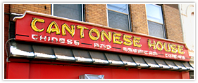
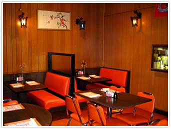

Originally founded in 1972 by Chinese immigrant Yen Yung for the purpose of establishing roots in the United States, the Cantonese House is located in downtown Duluth, MN between Lake Avenue and First Avenue West.
In September 2001 the restaurant was passed down the family to Yen's nephew, Chok Gee Yung, who is also one of the kitchen chefs. Even after changing ownership, the Cantonese House has continued with its mission in bringing a fresh taste of Canton to America.
With five tables, seven booths and three seats at the counter, the restaurant can accommodate up to fifty customers. Our staff includes two head chefs, one fry chef, one kitchen assistant, three waitresses and one delivery person. It is a small staff, but we do our best in what we do!
Our menu consists of over sixty entrees, including traditional Chinese dishes and American classics. We offer a variety of combinations for both individuals and families. The prices are modest and most of our dishes are made from scratch with fresh ingredients.
We accept VISA and Mastercard. Local checks are also accepted for in-house dining only.
A pleasant dining experience is not just about the food. To make our customers feel a little bit closer to Canton, we decorated our restaurant with traditional Chinese embroidery.
{kind=link}